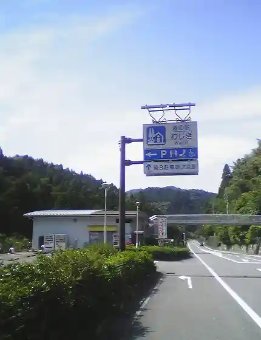
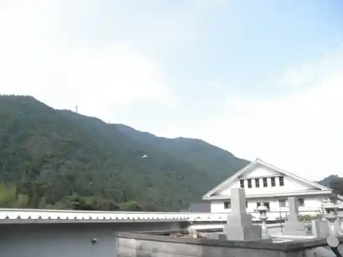
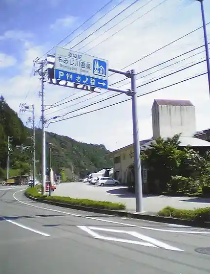
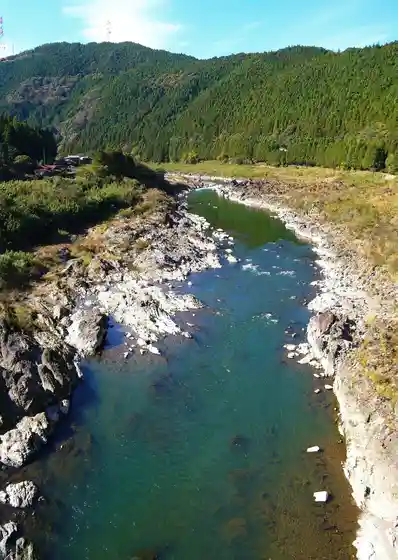

Taka no Se Kyohei Village
Naka Town, Tokushima · 0884-69-2346 · Official / source link
no Giku no Kan (Roadside Station Wajiki)
Naka Town, Tokushima · 0884-62-3553 · Official / source link

Washi Village (Kanko Bussan Center)
Naka Town, Tokushima · Official / source link

Momiji Kawa Onsen (Roadside Station Momiji Kawa Onsen)
Naka Town, Tokushima · 0884-62-1171 · Official / source link

Wajiki Line Oyobi Hyochu Kannon
Naka Town, Tokushima · Official / source link

Kenzan Narabi Ni A Kantai Shokubutsu Hayashi
Naka Town, Tokushima · Official / source link
Shiki Mitani Onsen | Kyugyochu
Naka Town, Tokushima · 0884-65-2116 · Official / source link
Shinrin Bunka Koen Aiai Land
Naka Town, Tokushima · 0884-62-3116 · Official / source link
Dai Todoroki Falls
Naka Town, Tokushima · Official / source link
Wajiki Line Campground
Naka Town, Tokushima · 0884-62-1186 · Official / source link
Mina Kawa Kyanpu Village
Naka Town, Tokushima · 0884-68-2952 · Official / source link
Shinrin Sogo Riyo Shisetsu (Fagasu Forest)
Naka Town, Tokushima · Official / source link
Nosambutsu Chokubai Tokoro Aioi
Naka Town, Tokushima · 0884-62-0950 · Official / source link